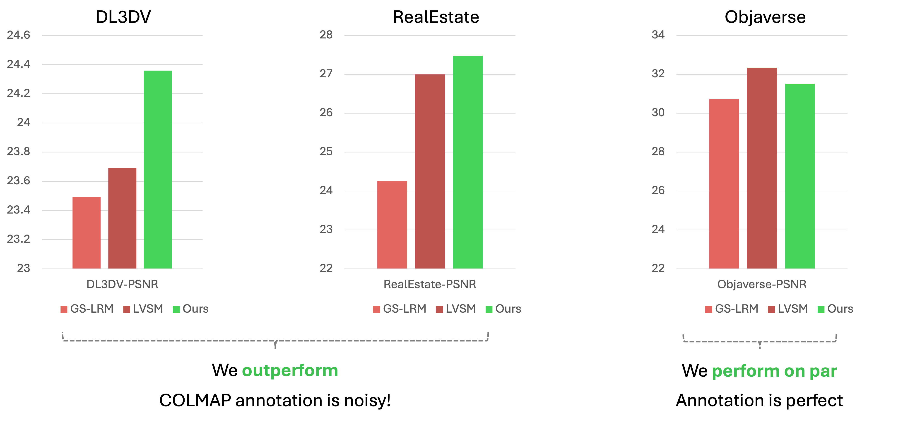
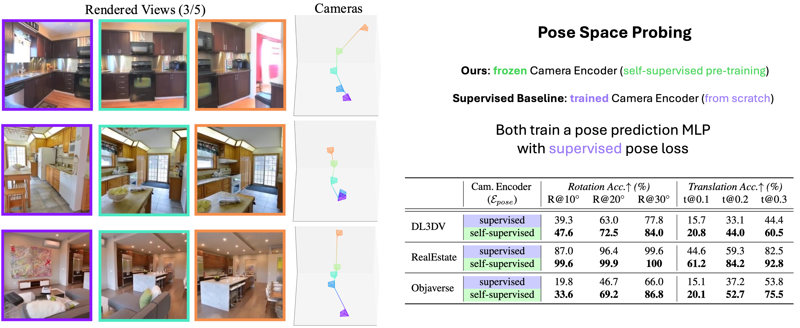

We include more novel view synthesis results of RayZer.
Comparison with 3D Supervised Counterparts
Experiment setting: We compare with two 3D supervised methods, GS-LRM and LVSM. They are trained with 3D camera annotations and uses labeled cameras during testing. RayZer share similar reconstruction and rendering modules with LVSM.
We compare with baselines on DL3DV, RealEstate, and Objaverse. Note that DL3DV and RealEstate are annotated by COLMAP.
Quantitative Comparison of Novel View Synthesis

RayZer (self-supervised) shows better novel view synthesis performance on DL3DV and RealEstate. This result not only shows the strong capability of RayZer, but also implies COLMAP annotation is not perfect. Supervised learning with COLMAP IS NOT ALWAYS THE BEST OPTION!
Qualiative Comparison of Novel View Synthesis

We find that GS-LRM and LVSM consistently fail on some cases during inference. Interestingly, these cases are the scenarios that COLMAP usually fails. For example, the glasses in the first row, the high luminance intensity and the white walls in the second row. The result again verifies the limitation of supervised learning with COLMAP annotations and highlights the importance of self-supervised learning.
Comparison of Camera Poses

(Left) We visualize RayZer predicted camera poses learned with self-supervision. We also visualize 3 out of 5 rendered views. The predicted poses correctly capture the camera motion patterns. (Right) At the same time, we find the learned pose space do not exactly match the real-world pose space. As RayZer is built with latent 3D representation, the learned pose space can be compatible with learned scene representation, but is not gauranteed to be geometrically correct. To understand the learned pose space, we probe it by train an prediction MLP using supervised learning (with frozen Camera Encoder initialized by self-supervised pre-training). We also compare with a supervised baseline where both Camera Encoder and prediction MLP are trained from scratch. The result shows that RayZer's learned pose space is meaningful, and RayZer self-supervised novel view synthesis pre-training is more effective than supervised training of pose.